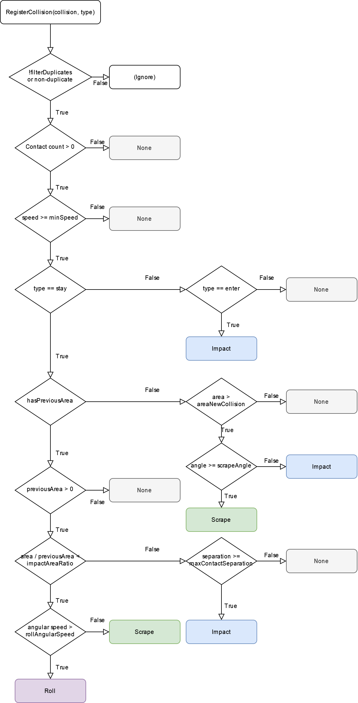

class in Clatter.Unity
Inherits from MonoBehaviour
A ClatterObject is a MonoBehaviour class wrapper for Clatter.Core.ClatterObjectData that automatically converts Unity PhysX collisions into Clatter audio.
A ClatterObject must have either a Rigidbody or ArticulationBody component and at least one Collider.
ClatterObjects are automatically initialized and updated by ClatterManager; you can use a ClatterObject without ClatterManager but it's very difficult to do so. Notice that there is no Update or FixedUpdate call because it's assumed that ClatterManager will call ClatterObject.OnUpdate() and ClatterObject.OnFixedUpdate().
ClatterObject listens for Unity collision events (enter, stay, exit) and converts them into Clatter.Core.CollisionEvent data objects:
"Enter" events are always impacts.
"Exit" events are always none-events.
"Stay" events can be impacts, scrapes, rolls, or none-events.

| Name | Type | Description | Default Value |
|---|---|---|---|
| minSpeed | double | The minimum collision speed in meters per second. If the collision is slower than this, it is ignored. | 0.00001 |
| areaNewCollision | double | On a collision stay event, if the previous area is None and the current area is greater than this, the audio event is either an impact or a scrape; see scrapeAngle. | 1e-5 |
| scrapeAngle | float | On a collision stay event, there is a large new contact area (see areaNewCollision), if the angle in degrees between Vector3.up and the normalized relative velocity of the collision is greater than this value, then the audio event is a scrape. Otherwise, it's an impact. | 80 |
| impactAreaRatio | double | On a collision stay event, if the area of the collision increases by at least this factor, the audio event is an impact. | 5 |
| rollAngularSpeed | double | On a collision stay event, if the angular speed in meters per second is greater than or equal to this value, the audio event is a roll; otherwise, it's a scrape. | 1 |
| maxContactSeparation | float | On a collision stay event, if we think the collision is an impact but any of the contact points are this far away or greater, the audio event is none. | 1e-8f |
| filterDuplicates | bool | ClatterObject tries to filter duplicate collision events in two ways. First, it will remove any reciprocal pairs of objects, i.e. it will accept a collision between objects 0 and 1 but not objects 1 and 0. Second, it will register only the first collision between objects per main-thread update (multiple collisions can be registered because there are many physics fixed update calls in between). To allow duplicate events, set this field to false. | true |
| maxNumContacts | int | The maximum number of contact points that will be evaluated when setting the contact area and speed. A higher number can mean somewhat greater precision but at the cost of performance. | 16 |
| rollSubstitute | AudioEventType |
Roll audio events are not yet supported in Clatter. If a roll is registered, it is instead treated as this value. | AudioEventType.impact |
| defaultObjectData | ClatterObjectData |
The default audio data. This is used whenever an ClatterObject collides with a non-ClatterObject object. |
new ClatterObjectData(0, ImpactMaterial.wood_medium_4, 0.5f, 0.1f, 100, ScrapeMaterial.plywood) |
| DynamicFriction | ImpactMaterialUnsized |
Unity physic material dynamic friction values. Key: An ImpactMaterialUnsized value. Value: A dynamic friction float value. Readonly. | new Dictionary |
| StaticFriction | ImpactMaterialUnsized |
Unity physic material static friction values. Key: An ImpactMaterialUnsized value. Value: A static friction float value. Readonly. | new Dictionary |
| Name | Type | Description | Default Value |
|---|---|---|---|
| impactMaterial | ImpactMaterialUnsized |
The unsized impact material. This will be converted into an ImpactMaterial by applying the size field (see below). | |
| autoSetSize | bool | If true, the "size bucket" is automatically set based on its volume. | true |
| size | int | The "size bucket", on a scale of 0 to 5. To generate realistic audio, smaller objects should have smaller size bucket values. Ignored if autoSetSize == true. For more information, including how to derive size bucket values, see: Clatter.ImpactMaterial and Clatter.ImpactMaterialData. | |
| hasScrapeMaterial | bool | If true, this object has a scrape material. | |
| scrapeMaterial | ScrapeMaterial |
The scrape material, if any. Ignored if hasScrapeMaterial == false. | |
| amp | double | The audio amplitude (0 to 1). This affects the overall loudness of audio generated by this object. | 0.1 |
| resonance | double | The resonance value (0 to 1). This affects the decay times of audio generated by this object. | 0.1 |
| physicMaterialMode | PhysicMaterialMode |
The mode for how the object's physic material is set. | PhysicMaterialMode.auto |
| dynamicFriction | float | If physicMaterialMode == PhysicMaterialMode.manual, this is the physic material dynamic friction value (0 to 1). To derive friction values from Clatter.Core.ImpactMaterialUnsized values, see: ClatterObject.DynamicFriction. | 0.1f |
| staticFriction | float | If physicMaterialMode == PhysicMaterialMode.manual, this is the physic material static friction value (0 to 1). To derive friction values from Clatter.Core.ImpactMaterialUnsized values, see: ClatterObject.StaticFriction. | 0.1f |
| bounciness | float | If physicMaterialMode == PhysicMaterialMode.manual or physicMaterialMode == PhysicMaterialMode.auto, this is the physic material bounciness value (0 to 1). This always needs to be set on a per-object basis, as opposed to being derived from a Clatter.Core.ImpactMaterialUnsized value. | 0.2f |
| massMode | MassMode |
The mode for how the mass is set. | MassMode.body |
| fakeMass | double | If massMode == MassMode.fake_mass, the underlying Clatter.Core.ClatterObjectData will use this value when generating audio rather than the true mass of the Rigibody/ArticulationBody. |
|
| hollowness | double | If massMode == MassMode.volume, hollowness is the portion of the object that is hollow (0 to 1) as follows: mass = volume * density * (1 - hollowness) where volume is the sum of the bounding box sizes of each Renderer object and density is derived from the impact material (see: Clatter.Core.ImpactMaterialData). |
|
| onDestroy | UnityEvent< uint > | Invoked when this object is destroyed. Parameters: The ID of this object, i.e. this.data.id. | new UnityEvent |
| data | ClatterObjectData |
This object's data. |
public void Initialize(uint id)
Set the underlying ClatterObjectData. This must be called once in order for this object to generate audio.
| Name | Type | Description |
|---|---|---|
| id | uint | This object's ID. |
public void OnUpdate()
Refresh the recorded set of collisions. This method is not equivalent to Update() and is called automatically by ClatterManager.
public void OnFixedUpdate()
Update the directional and angular speeds of the underlying Clatter.Core.ClatterObjectData. This method is not equivalent to FixedUpdate() and is called automatically by ClatterManager.